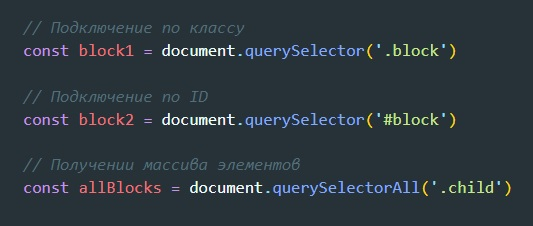
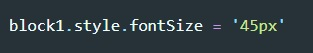
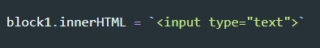
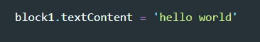
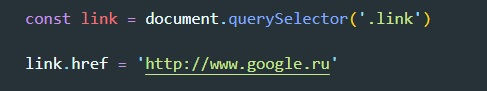
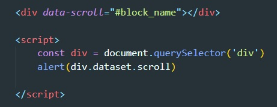

Подключение осуществляется с помощью методов
querySelector() - в качестве входного параметра указывается селектор элемента. Возвращает объект (элемент)
querySelectorAll() - в качестве входного параметра указывается селектор элементов. Возвращает коллекцию объектов (псевдомассив)
Примеры:
Для того что бы получить доступ к стилям элемента, мы обращаемся к нему и применяем метод style, далее ставим точку и указываем то свойство которое нам нужно.
ВАЖНО - в JS нельзя в именах использовать тире, поэтому в указаниях свойства CSS надо использовать принцип camelCase
Пример
Для получения содержимого этомента, т.е. до того что заключено в теге можно получить используя два метода
innerHTML - позволяет добавлять шаблонные строки
textContent - получает текст заключенный в тег
 Обращаемся к элементу, через точку прописываем его свойство и далее что хотим с ним, то и делаем
C помощью метода classList мы можем манипулировать классами элемента:
add - добавить класс
remove - удалить класс
contain - проверить наличие (вернется либо false либо true)
toggle - если класс есть то он удалится, если его нет то добавится
Все атрибуты, начинающиеся с префикса «data-», зарезервированы для использования программистами. Они доступны в свойстве dataset.
Например, если у elem есть атрибут "data-about", то обратиться к нему можно как elem.dataset.about.
Атрибуты, состоящие из нескольких слов, к примеру data-order-state, становятся свойствами, записанными с помощью верблюжьей нотации: dataset.orderState
Методы для работы с атрибутами:
elem.hasAttribute(name) – проверить на наличие.
elem.getAttribute(name) – получить значение.
elem.setAttribute(name, value) – установить значение.
elem.removeAttribute(name) – удалить атрибут
elem.attributes – это коллекция всех атрибутов